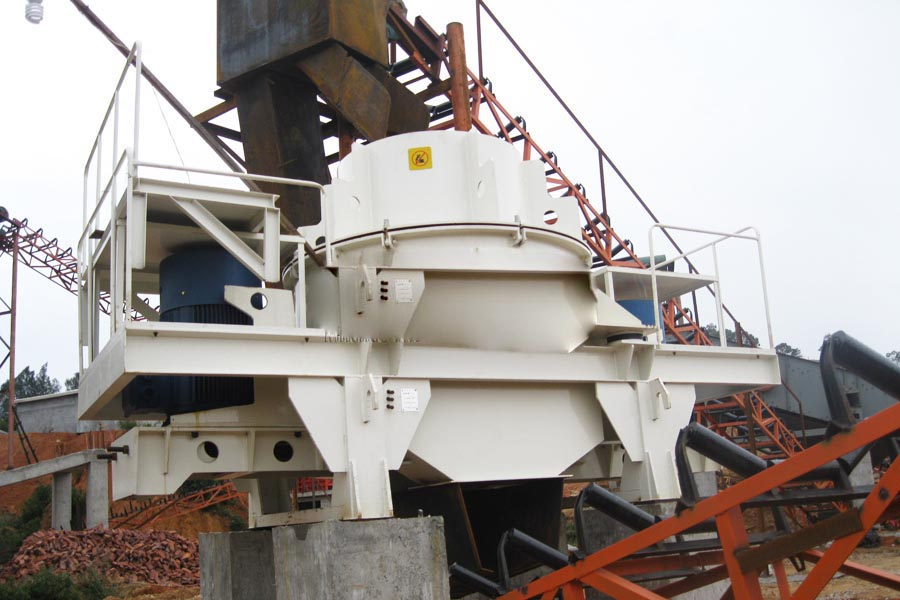

Construction waste crushing production line

Mobile construction waste crushing station for urban construction waste crushing.
silica sand making plant
silica sand making plant. Sand production line | stone production line | Sand Production Line | mineral processing equipment | sand production line complete set of equipment, CAG Machinery Co., Ltd. specializes in producing sand and gravel production lines, processing equipment, sand production line, stone production line and other equipment, including sand production line complete set of equipment Prices and package processing equipment prices super affordable.
The new equipment Sand Sand Sand Sand Price sand making equipment mechanical sand production line, sand production line, stone production line, sand making machine, sand making equipment is the Great Wall of machinery specializing in the production, using the best quality materials Abrasive to provide the best quality sand production line, stone production line.

Sand production line
CAG Machinery (Sand production line) in mineral processing aspects widely used, many customers get more benefits, CAG product also mainly for minerals, rock crusher, mineral grinding, sand stone and mineral processing and other fields. We provide Sand production line technical guidance, based on your specific needs, for your rational design of production lines.
Because the tariff is low, you can (Sand production line) to save a lot of costs, it can also be purchased to get more benefits, our products and designs for you is really value for money.
Sand production line | hammer crusher | sand making production line equipment | new stone production line, CAG production line Manufacturing Co., Ltd. specializes in manufacturing sand production line, hammer crusher, sand making production line equipment, new aggregates production line, according to customer's different demand for tailor-made various models of production line equipment. Zhengzhou sand production line factory
Sand production line equipment configuration:
vibrating feeder + PE series jaw crusher + PF series impact crusher + belt conveyor +circular vibrating sieve;
vibrating feeder + PY series cone crusher / PE series jaw crusher + belt conveyor + circular vibrating screen;
vibrating feeder + PE series jaw crusher + PF series impact crusher + PCX series vertical shaft impact crusher + YK series circular vibrating screen + belt conveyor.
| Production capacity (TPH) | < 20 | 20-40 | 40-60 | 60 |
|---|---|---|---|---|
| Vibrating Feeder | ZSW100 | ZSW100 | ZSW150 | ZSW150 |
| Jaw crusher | PE400*600 | PE500*750 | PE600*900 | PE600*900 |
| Cone crusher | PYB-600 | PYB-900 | PYB-1000 | PYB-1300 |
| Circular Vibrating Screen | YK1245 | YK1245 | YK1545 | YK1545 |
| Cone crusher | PYD-600 | PYD-600 | PYD-900 | PYD-900 ×2 |
| Circular Vibrating Screen | 2YK1245 | 2YK1545 | 2YK1848 | 2YK2160 |
| Belt conveyors | B500 | B650 | B800 | B800 |
| Feed size | < 350mm | < 420mm | < 500mm | < 500mm |
silica sand making plant. Sand Production Line | Sand Production Line | Aggregate Production Line -CAG Mechanical Manufacturing Co., CAG is a design, development, production and sales in a sand production line factory, CAG sand making production line is equipped with the best quality of crushing and screening equipment, Aggregate has the most advanced production line manufacturing process. If you want to buy sand production line.
River gravel sand equipment / building sand production line / sand production line price, CAG is a leading manufacturer specializing in the production river pebbles sand making equipment, building sand production line, sand production line price range of products, and provide you with these works equipment , operating specifications, customer site maps, as well as technical support.
Leave Me A Message, Now
If you have any questions regarding equipment prices, production line configuration or other problems, you can send a message to us, we will contact you soon.